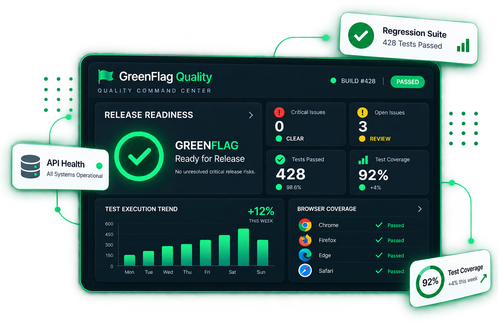

Software
New features,
changes, or releases
Software Quality & Test Automation
We help businesses identify software risks, strengthen test coverage, automate repetitive validation, and release with confidence.

Our Philosophy
Every software product carries risks. Our job is to find them before your customers do.
New features,
changes, or releases
Red Flag
Critical defects or unacceptable risks that need to be addressed before release.
Yellow Flag
Known issues or areas requiring attention, assessment, or an informed release decision.
Green Flag
The tested scope meets the agreed quality criteria, with no unresolved critical risks identified within that scope.
Ready to release
with confidence
From Software Risk→to GreenFlag
What We Test
From hands-on product testing to automation and release strategy, GreenFlag helps teams ship with confidence.
Exploratory, functional, regression, usability and end-to-end testing to ensure your product works as expected.
Maintainable UI, API and regression automation integrated into your delivery workflow.
Functional, integration, authentication and data validation testing for reliable and secure APIs.
Load, stress and scalability testing to identify bottlenecks and understand application behavior under real-world conditions.
Practical application security checks to help identify vulnerabilities and reduce release risk.
Test strategy, quality processes, release readiness and risk assessment to help teams build an effective and sustainable quality function.
Our Differentiator
AI-assisted workflows can support smarter test design, scenario generation, failure analysis and quality insights — while experienced QA judgment remains at the center.
How We Work
A practical quality process that turns uncertainty into clear, confident release decisions.
Understand the product, users, requirements and areas of greatest risk.
DiscoverDefine testing scope, priorities, coverage and the right quality approach.
DesignExecute focused testing and introduce automation where it provides real value.
ValidateCommunicate findings clearly, support release decisions and continuously improve quality.
ImproveEvery engagement is adapted to your product, risk profile and delivery model.
About GreenFlag
GreenFlag Quality is a focused quality engineering company helping software teams understand risk, strengthen quality and release with confidence.
We combine hands-on testing, automation and technical validation with practical QA strategy.
Our approach is designed to give teams a clear view of quality, risk and release readiness before software reaches their customers.
Founder & QA Lead
15+Years of professional
experience
Across software quality, testing, automation, QA leadership and release management.
Let's Talk
Whether you need focused testing, automation, release confidence or help strengthening your QA process, tell us what you're working on.
Let's Talk Quality
Tell us what you're working on and we'll start by understanding the problem, the risks and where GreenFlag can help.
Connect on LinkedIn